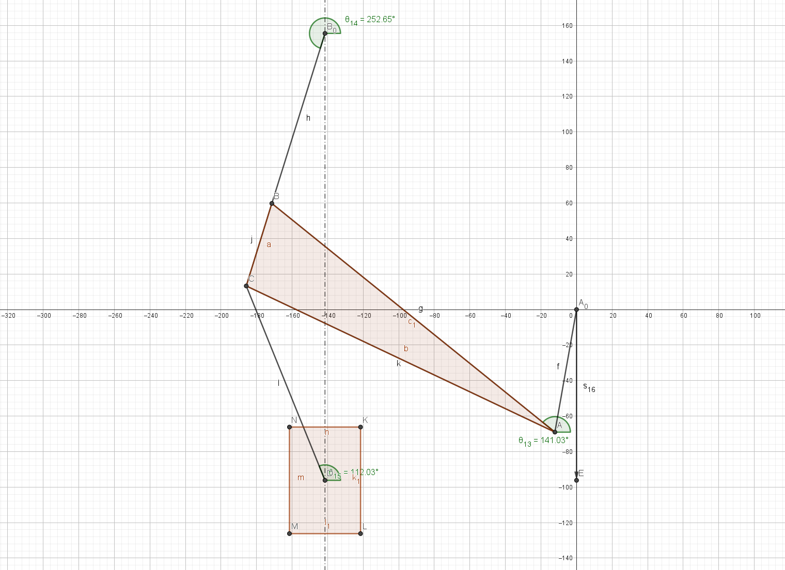
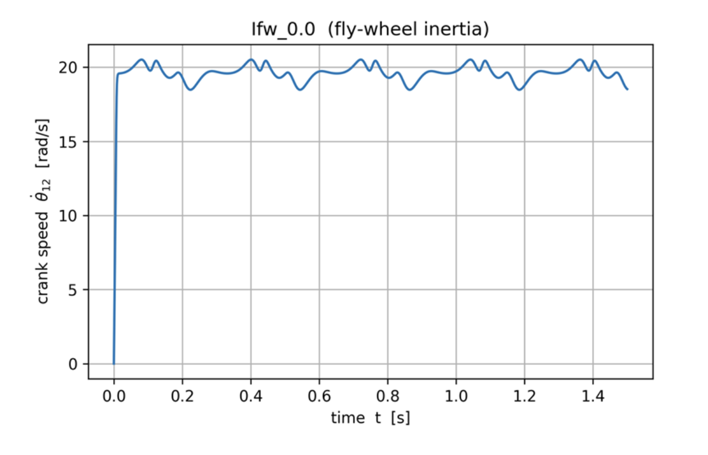

I derived the equation of motion of a crank–slider based press with auxiliary links using loop-closure kinematics and influence coefficients, then ran a forward dynamics simulation. Different motors (from a catalog), gear ratios, and an optional flywheel were evaluated for speed regulation and startup behavior. (RK4/5 with embedded error estimate; forming force modeled as a simple harmonic to study its effect on the crank speed.)
Kinematic Model & Variables
The position analysis uses stepwise loop-closure to avoid ambiguous solutions. Dependent coordinates are expressed in terms of the generalized coordinate (crank angle), and first/second-order influence coefficients are obtained by differentiating the loop equations. These feed the generalized inertia, Coriolis/centripetal terms, and the generalized force for the ram/load.
Forward Dynamics Setup
With the kinematics and influence coefficients available, I formed the scalar EOM in the crank coordinate using Lagrange’s formulation. Motor torque was supplied from a fitted induction-motor torque–speed curve (catalog data), reflected through the gear ratio. A flywheel inertia term could be added to the reflected inertia. Time integration used an embedded RK4/5 stepper (RK4 with a 5th-order error estimate) to monitor local error while iterating. The forming force on the ram was approximated by a sinusoidal pulse over the lower half of the stroke to examine its effect on instantaneous crank speed.
Example Response
Below is a representative startup/steady-state trace of crank speed. Runs were repeated for multiple gear ratios and flywheel inertias. As expected, the flywheel reduces speed ripple but increases the time to reach steady state.
Lessons Learned
- Adding a flywheel decreases deviation from the desired speed, but the system takes longer to reach steady state.
- Lagrange-based analytical dynamics makes EOM derivation straightforward when nonlinear effects (e.g., dry friction) are negligible.
- Torque–speed curves fitted from catalog data integrate well into time-domain simulations and help size the motor/gear ratio.